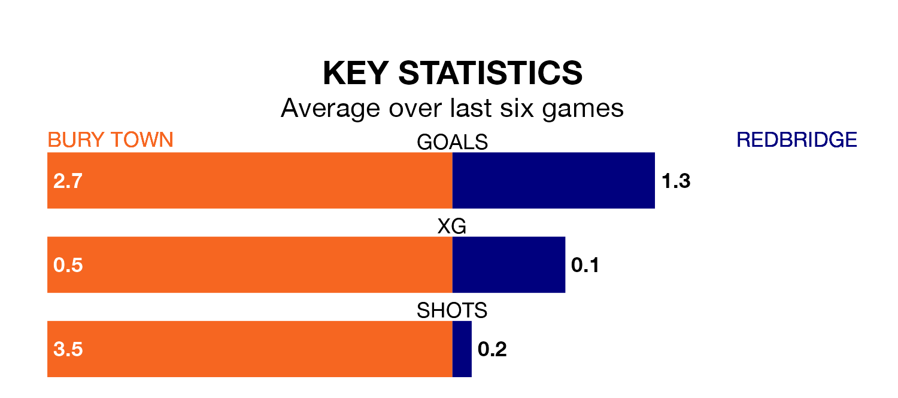

Bury Town face Redbridge on Tuesday seeking to protect their formidable unbeaten run in Isthmian League Division One North.
Bury are unbeaten in eight, with six wins and two draws, ahead of the 7.45pm kick-off.
They face a Redbridge team who have won just one and drawn one over the same number of games.
With 45 goals in 19 games so far this season, Bury are the league's third-highest scorers with 2.4 goals per game. And they are conceding fewer than average, letting in 31 goals at a rate of 1.6 per game.
Redbridge, meanwhile, are below average scorers, with 1.6 goals per game, compared to a league average of 1.7. They have conceded 2.1 goals per game.
The away team are 15th in the table after 16 games, of which they have won four and drawn five, earning 17 points.
Town are seven places ahead of Redbridge in eighth, with nine wins and five draws putting them on 32 points.
Bury's last match was on January 13, a 2-2 draw against Bowers and Pitsea.
Redbridge lost 3-1 against Brentwood Town last time out, on Saturday.
Updated: 09:18 (UTC), 23/01/24